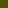

L’Équipement
De la ferme
…Une installation adéquate
L’équipement de La Ferme du Tréglodé est étudié pour le plus grand confort des chevaux et de ses cavaliers, afin d’aborder l’équitation dans d’excellentes conditions.
Le TrÉglodÉ comprend
En intérieur-  Une maison d’habitation privée avec une capacité d’accueil de sept couchages répartis dans deux dortoirs
- Une sellerie avec un grand choix de matériel pour équiper votre cheval : Filets, selles, longes, enrênements, voltige, horse-ball, attelage (2 sulkies)…
- La sellerie comprend une partie cheval et une partie poney avec hauteur adaptée à la taille de l’enfant
- Un Club-House
- Un manège de 22 x 20 m
- Des douches, éviers et sanitaires près de la sellerie pour le camping (accès au public)
- 9 boxes
- 4 stabulations
- Un parking
- Une carrière de 42 x 22 m
- Un hangar à tracteur, camion, voiture
- Une aire de stockage foin et paille
- Une dalle de pansage pour la préparation des chevaux
- Un parcours de cross qui traverse les pâturages
- Des paddocks pour la détente des chevaux donnant sur la dalle de pansage
- Dix prés pour l’été et quatre jachères exploitables
- Un enclos à lapins, chèvres et cochons
- Un poulailler
- Un étang avec pré à moutons, servant d'espace de ballade pour les Baby-Poneys
 boutique
boutique L'info en
L'info en